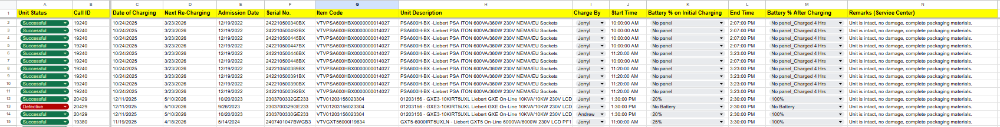

Project Overview
This project demonstrates my ability to manage structured technical data
through an organized charging logsheet system used for monitoring UPS units
under service center operations.
Operational Problem
Charging activities for multiple units needed proper tracking including
status updates, technician assignment, charging duration, and future
re-charging schedules. Without structured logging, monitoring becomes
inconsistent and error-prone.
Solution
- Designed a structured logsheet layout for consistent data entry
- Standardized column headers for operational clarity
- Implemented organized date tracking (Charging Date & Next Re-Charging)
- Recorded technician assignment and time logs (Start & End Time)
- Documented battery status and service remarks for accountability
Process Implementation
- Encoded structured unit data consistently
- Ensured accurate time logging per unit
- Maintained uniform status documentation
- Improved monitoring of future re-charging schedules
Results & Impact
- Improved visibility of unit charging status
- Reduced risk of missed re-charging schedules
- Enhanced technician accountability
- Created an organized reference system for service tracking
Project Preview
Preview of the structured UPS charging monitoring sheet.

View Full Spreadsheet